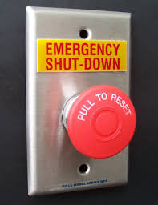

CORRECT!
Certain events may arise within the reactor that require immediate shutdown of the system. All the emergency shutdown mechanisms become available when either of the Reactor Trip Signals like high system temperature, loss of coolant flow, drastic changes in steam flow rate or loss of power to key instruments like pumps are encountered. These shutdown systems ensure the safe operation of reactor at all times and minimize the probability of any radiation release accident.
The Nuke Quiz #3
Question 5
Under what conditions does an immediate automatic shutdown of the reactor system takes place?
